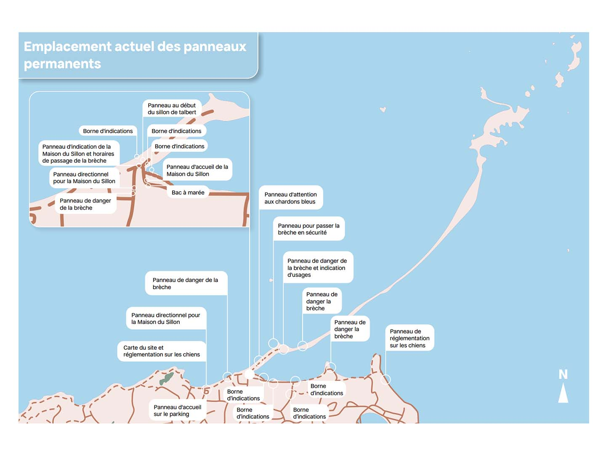
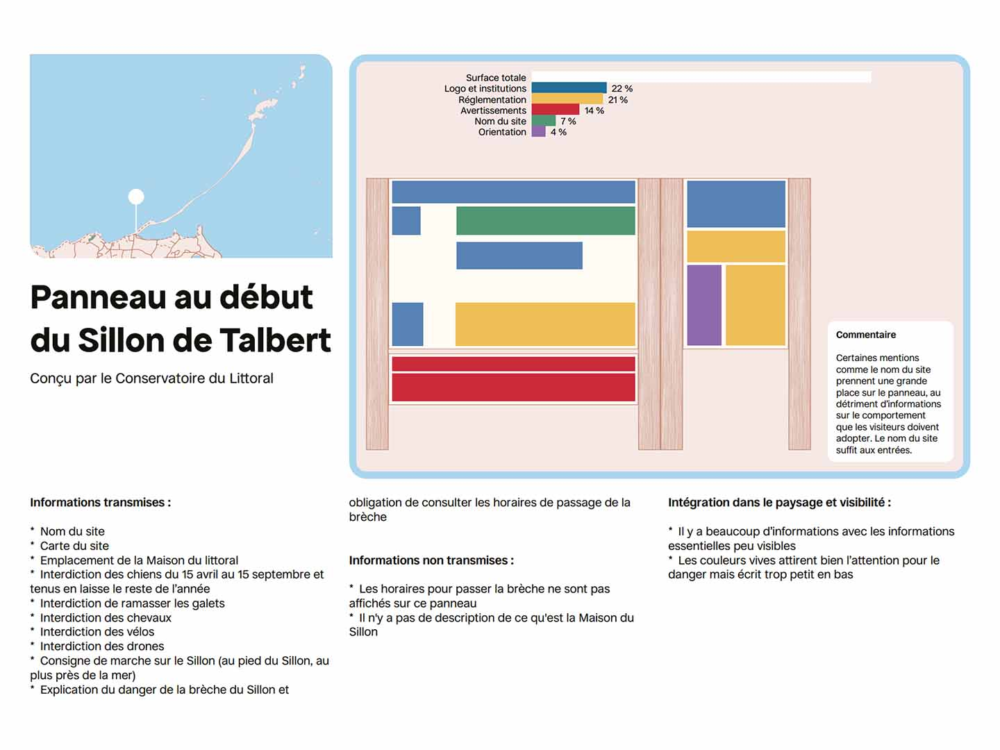
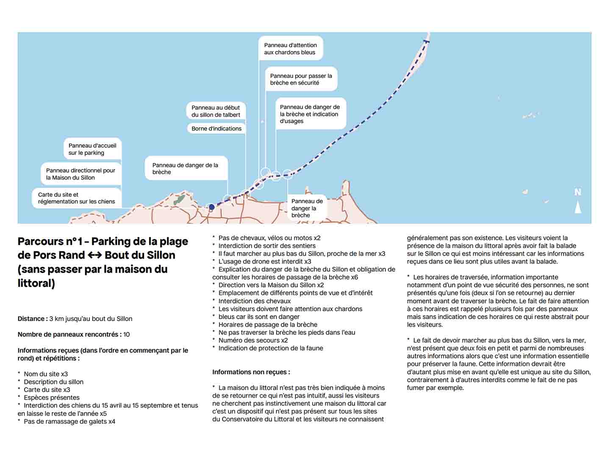
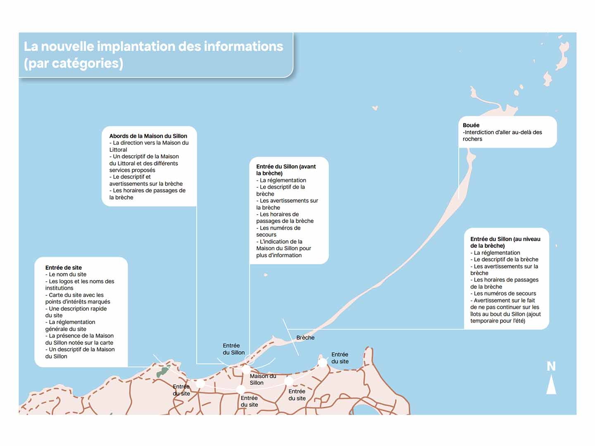
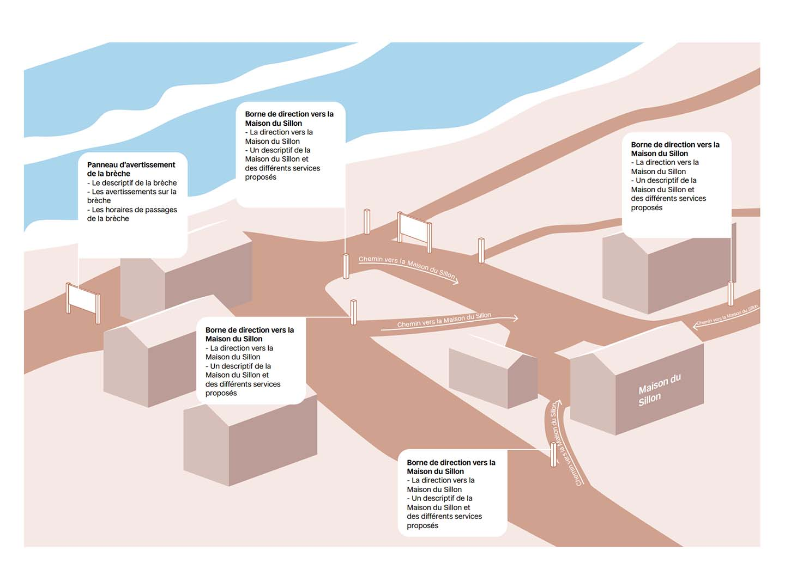

La signalétique du Sillon de Talbert - Etude et proposition
2024-2025
Programme Design des Territoires
Antenne Design des Mondes Littoraux
La signalétique sur les sites du Conservatoire du Littoral est un élément important. Différents enjeux la traversent : sensibilisation sur la faune, la flore, la géologie et les particularités d’un site, avertissement sur les dangers auxquels les visiteurs peuvent être confrontés, réglementation liée à la préservation et orientation pour les visiteurs découvrant l’endroit pour la première fois.
Sur la base de deux sites différents du Trégor-Goëlo : le Sillon de Talbert et la forêt de Penhoat-Lancerf ; et l’étude de leur signalétique actuelle, ces deux livrets présentent de nouvelles manières de disposer et transmettre l’information dans ces lieux soumis à une forte pression de visiteurs.





Site conçu par Amaury Hardré, 2024


à propos